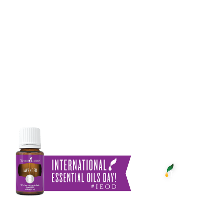
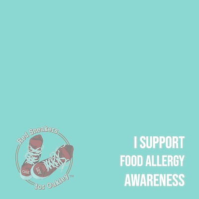
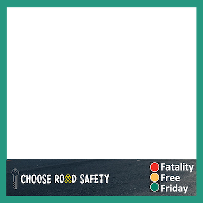
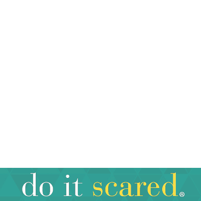
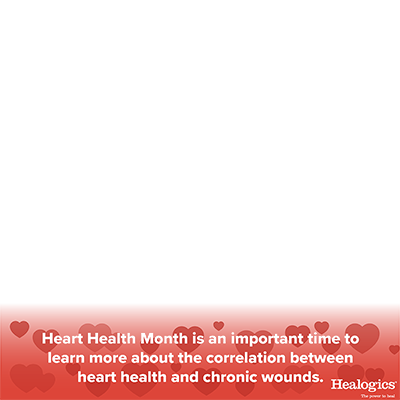

Featured Campaigns

International Essential Oils Day
1732 Supporters

Red Sneakers for Oakley
638 Supporters

Fatality Free Friday
148 Supporters

Do It Scared® with Ruth Soukup
239 Supporters

Healogics Heart Health Month
10 Supporters